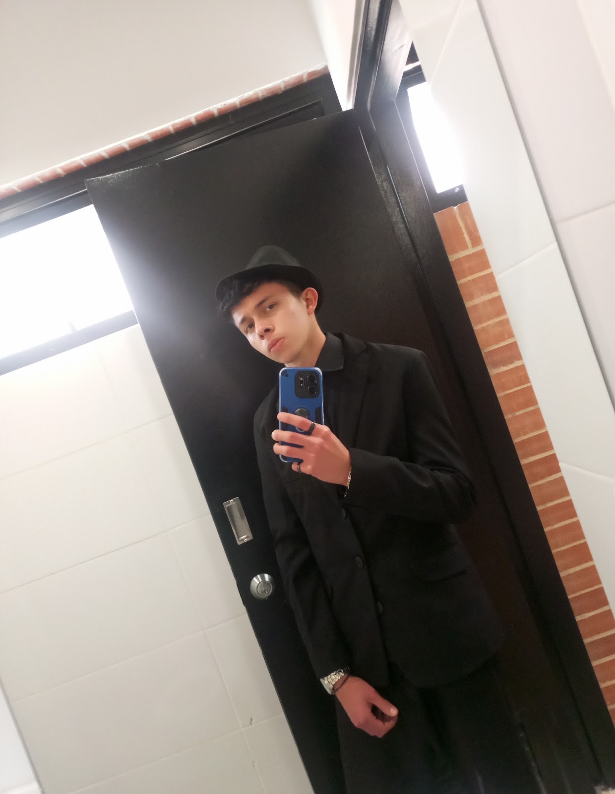

🙋♂️
Mi personalidad
Soy tranquilo, reservado y me gusta hacer las cosas a mi manera.
Soy una persona tranquila, con sueños, metas y ganas de salir adelante. Esta página representa mis gustos, mis proyectos y lo que quiero lograr en el futuro.
Conoce más sobre mí
Me considero una persona tranquila y algo callada, pero también me gusta compartir con los demás. Quiero aprender cosas nuevas, prepararme para el futuro y construir mi propio camino.
Soy tranquilo, reservado y me gusta hacer las cosas a mi manera.
Quiero seguir aprendiendo, mejorar cada día y buscar soluciones a los retos.
Quiero prepararme, trabajar por mis metas y crear algo propio.
Estas son algunas de las cosas que me gustan y hacen parte de mis intereses.
Me gustan las motos y todo lo relacionado con ellas.
Me gusta el fútbol, disfrutar los partidos y compartir el deporte.
Es otro de mis deportes favoritos y una actividad que me interesa.
Es mi color favorito y también es parte del diseño de esta página.
Me interesa la cocina y quiero aprender más sobre el mundo gastronómico.
Tengo objetivos que quiero cumplir con esfuerzo, dedicación y aprendizaje.
Quiero estudiar gastronomía, aprender técnicas de cocina y desarrollar mis habilidades culinarias.
También me interesa estudiar ingeniería civil y aprender a diseñar y construir proyectos.
Quiero tener un negocio propio, desarrollar buenas ideas y hacer que mi proyecto crezca.
Sueño con salir del país, conocer nuevas culturas y tener la oportunidad de estudiar en el extranjero.
Puedes encontrar aquí mis datos de contacto y redes sociales.
Nota: si publicas esta página en Internet, considera quitar el número de celular para proteger tu privacidad.